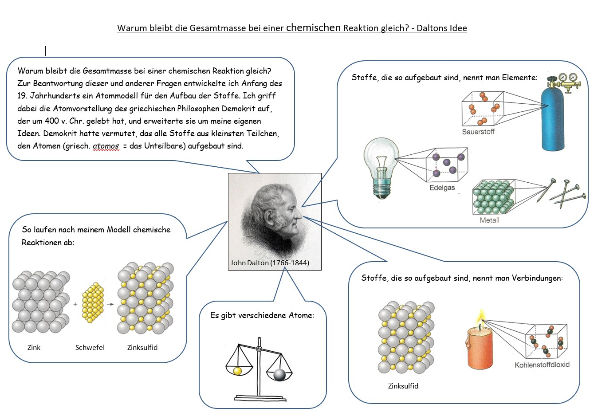

Warum bleibt die Gesamtmasse bei einer chemischen Reaktion gleich? - Daltons Idee
Arbeitsauftrag: Analysiere die Abbildung sorgfältig. Bearbeite anschließend die Aufgaben, die schrittweise erscheinen werden, in deinem Heft.

Aufgaben zu Daltons Atommodell
✒️1. Beschreibe, wie nach Daltons Modell Stoffe aufgebaut sind.
Tipp: Lies den Text links oben in der Infografik und schau dir die Beispiele für "Elemente" und "Verbindungen" an. Woraus bestehen alle diese Stoffe?
✒️2. Beschreibe den Ablauf einer chemischen Reaktion nach Daltons Vorstellungen.
Tipp: Schau dir die Abbildung mit der Überschrift "So laufen nach meinem Modell chemische Reaktionen ab" genau an. Was passiert dort mit den Zink- und Schwefel-Teilchen?
✒️3. Erläutere das Gesetz vom Erhalt der Masse mithilfe des Dalton'schen Atommodells.
Tipp: Kombiniere deine Antwort aus Aufgabe 2 mit dem Bild der Waage ("Es gibt verschiedene Atome"). Wenn bei einer Reaktion keine Teilchen verschwinden und jedes Teilchen eine bestimmte Masse hat, was bedeutet das für die Gesamtmasse vor und nach der Reaktion?
✒️4. [Zusatz] Skizziere die Verbrennung von Kohle im Modell. (Hinweis: reine Kohle ist ein Element)
Tipp: Die Verbrennung von Kohle ist die Reaktion von Kohlenstoff (C) mit Sauerstoff (O₂). Schau dir das Beispiel "Kohlenstoffdioxid" in der Infografik an. Deine Skizze sollte zeigen, wie die einzelnen Kohlenstoff- und Sauerstoff-Atome sich neu zu Kohlenstoffdioxid-Teilchen verbinden.
Weiterführende Aufgaben
✒️5. Schlage im Buch die Seite mit dem Periodensystem der Elemente auf. Erkläre mit deinen eigenen Worten, was dort dargestellt wird.
✒️6. Suche im Periodensystem der Elemente nach Elementen, die offensichtlich nach Orten oder Personen benannt sind. Schreibe mindestens drei dieser Elemente heraus.
✒️7. Erkläre, warum zur Kennzeichnung der Elemente nicht ein Buchstabe ausreicht.
✒️8. Begründe, warum die folgenden Aussagen falsch sind:
In den Lücken zwischen den Atomen eines Stoffes befindet sich Luft.
Quecksilber ist ein bei Raumtemperatur flüssiges Metall, weil seine Atome auch flüssig sind.
Schwefel ist gelb. Also sind Schwefel-Atome auch gelb.
Tipp zu a): Daltons Modell geht von unteilbaren Atomen aus. Gibt es zwischen den Atomen noch etwas Kleineres wie Luft-Teilchen?
Tipp zu b): Der Aggregatzustand (fest, flüssig, gasförmig) ist eine Eigenschaft des gesamten Stoffes, die durch die Bewegung und Anziehung der Teilchen entsteht, nicht eine Eigenschaft eines einzelnen Atoms.
Tipp zu c): Die Farbe ist eine Eigenschaft des Stoffes, die dadurch entsteht, wie der Stoff Licht reflektiert. Ist das eine Eigenschaft, die ein einzelnes, winziges Atom haben kann?
Exkurs abgeschlossen
Sehr gut! Du hast dir nun das notwendige Wissen über das Atommodell erarbeitet. Schließe dieses Fenster und kehre zum Hauptprotokoll zurück, um mit der Hypothese weiterzumachen.